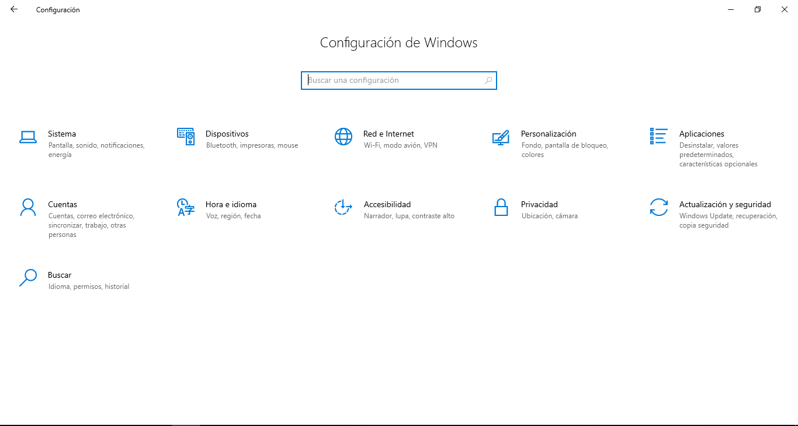
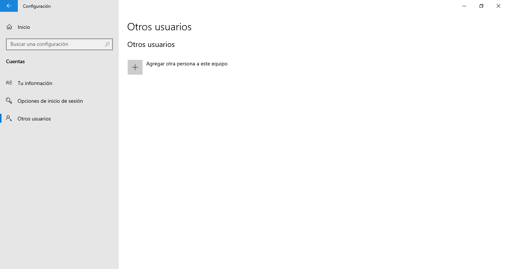
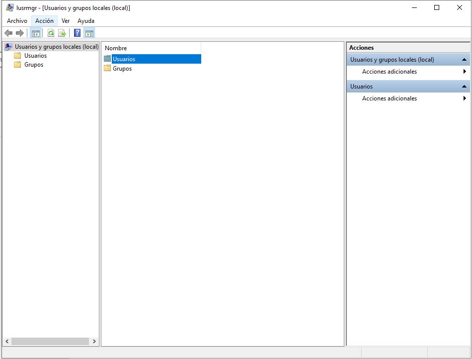
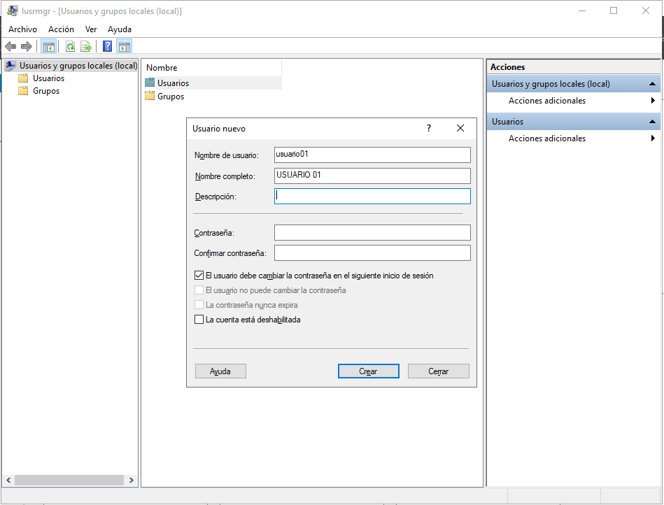
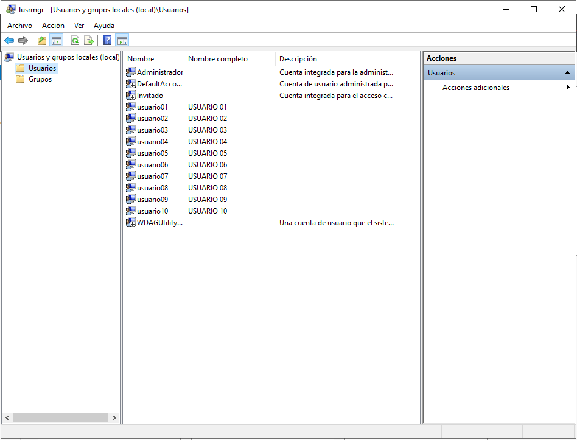
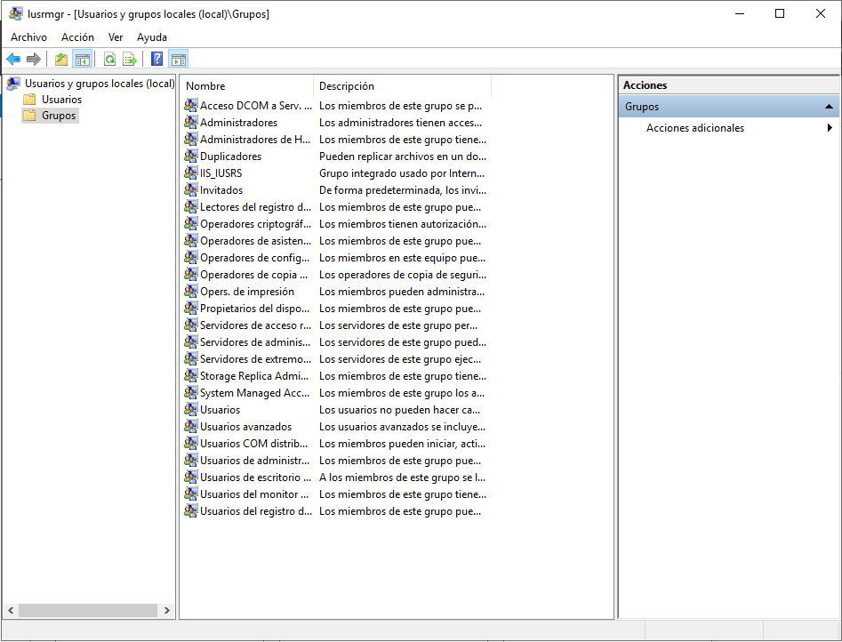
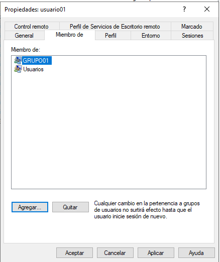
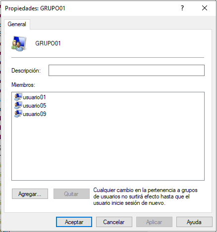
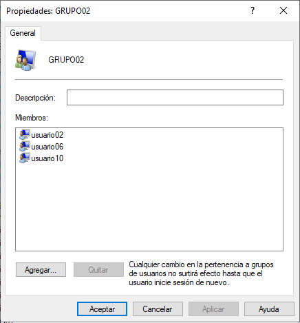
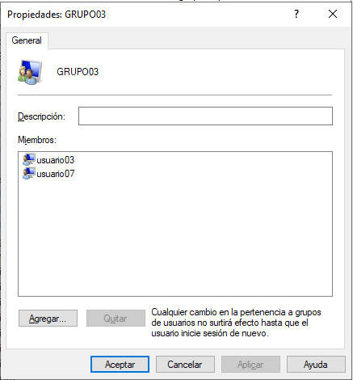

Objetivo: Instalar un mínimo de 10 usuarios y crear al menos 4 grupos de usuarios
Para crear los usuarios y los grupos, lo primero es acceder a Configuración
Después, nos vamos a la parte de "Cuentas", damos click en el menú del lado izquierdo en "Otro usuario" y después en "Agregar otra persona a este equipo"
Después aparecerá una ventana para la gestión de usuarios y grupos.
Lo primero que crearemos son los usuarios. Para eso, daremos click derecho en "Usuarios" y después en "Crear usuario". Aparecerá una ventana como la de la siguiente imagen. Escribiremos su nombre de usuario y su nombre completo. Si se desa agregar más información como descripción y contraseña, es opcional. Para fines prácticos solo agregaremos esos 2 campos.
Al dar click en "Crear" volverá a aparecer la pantalla para agregar otros usuarios. Para efectos prácticos agregaremos 10 usuarios. Al terminar los veremos enlistados en los usuarios
Ahora lo siguiente es crear los grupos de usuarios. La dinámica es parecida a la de Usuarios. Damos click derecho en "Grupos" y después en "crear grupo". Agregaremos el nombre del grupo y daremos click en Crear.
Ahora para asignar usuarios a cada grupo, nos tenemos que ir a cada usuario, damos click derecho en el usuario que queramos gestionar y nos vamos a "Propiedades". Una vez abierta la pestaña nos vamos a la sección de "Miembros de"
Damos click en agregar, escribimos el nombre del grupo y después en "Aceptar"
A continuación mostraremos los grupos con sus respectivos usuarios en cada uno de ellos
